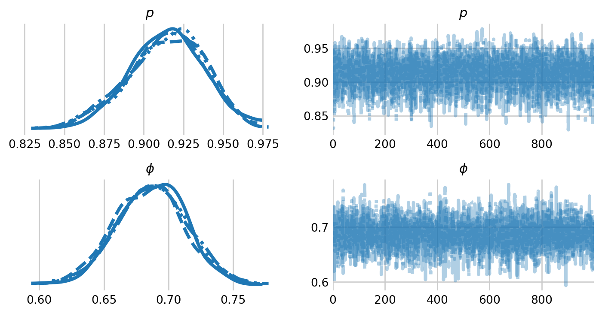

from jax import random
from jax.scipy.special import expit
from numpyro import handlers
from numpyro.contrib.control_flow import scan
from numpyro.infer import NUTS, MCMC
import arviz as az
import jax.numpy as jnp
import matplotlib.pyplot as plt
import numpy as np
import numpyro
import numpyro.distributions as dist
import seaborn as sns
# plotting defaults
plt.style.use('fivethirtyeight')
plt.rcParams['axes.facecolor'] = 'white'
plt.rcParams['figure.facecolor'] = 'white'
plt.rcParams['axes.spines.left'] = False
plt.rcParams['axes.spines.right'] = False
plt.rcParams['axes.spines.top'] = False
plt.rcParams['axes.spines.bottom'] = False
sns.set_palette("tab10")
# make the labels on arviz plots nicer
labeller = az.labels.MapLabeller(
var_name_map={"psi": r"$\psi$", 'gamma': r"$\gamma$", 'alpha': r'$\alpha$',
'epsilon': r"$\epsilon$", 'p': r"$p$" , 'beta': r'$\beta$',
'phi': r'$\phi$', 'alpha_t': r'$\alpha_t$',}
)
# hyperparameters
RANDOM_SEED = 1792
CHAIN_COUNT = 4
WARMUP_COUNT = 500
SAMPLE_COUNT = 1000Cormack-Jolly-Seber
Estimating survival with Numpyro
In this notebook, I demonstrate how to estimate survival with Cormack-Jolly-Seber models in NumPyro. This notebook is a near carbon copy of the CJS notebook on the NumPyro documentation page. Nevertheless, I hope that this notebook will be useful in its own right, primarily for folks who are more familiar with CJS models and less familiar with NumPyro.
Model definition
This model is very similar to the one defined in the NumPyro Jolly-Seber notebook. In some ways, this model is actually much simpler because we do not have to worry about recruitment into the population. This model does, however, introduce a new character from the NumPyro-verse: handlers.mask().
handlers.mask() tells NumPyro: do not include this the sample of z in the log probability computation when the mask is False. In this case, the mask, has_been_captured, indicates whether the animal has been captured by time t. As such, we essentially ignore the z state until the animal is captured. We include the mask in the carry, and update it with new data after we transition the z state (i.e., after the animal has survived or died between intervals).
The model requires one more trick to run. Essentially, we need to ensure that z[t]=1 during the occasion of the animal’s first capture. To do so, we employ the mask: mu_z_t = has_been_captured * phi * z + (1 - has_been_captured). This forces z[t]=1 until the animals first capture. After the animal’s first capture, the z state is included in the log probability calculation, and mu_z_t simplifies to phi * z.
def p_dot_phi_dot(capture_history):
capture_count, _ = capture_history.shape
phi = numpyro.sample("phi", dist.Uniform(0.0, 1.0))
p = numpyro.sample("p", dist.Uniform(0.0, 1.0))
def transition_fn(carry, y):
has_been_captured, z = carry
with numpyro.plate("animals", capture_count, dim=-1):
# only compute log probs for animals where has_been_captured is True
with handlers.mask(mask=has_been_captured):
# force mu_z_t=1 during the occasion of the animal's first capture
mu_z_t = has_been_captured * phi * z + (1 - has_been_captured)
z = numpyro.sample(
"z",
dist.Bernoulli(dist.util.clamp_probs(mu_z_t)),
infer={"enumerate": "parallel"},
)
mu_y_t = p * z
numpyro.sample(
"y", dist.Bernoulli(dist.util.clamp_probs(mu_y_t)), obs=y
)
has_been_captured = has_been_captured | y.astype(bool)
return (has_been_captured, z), None
z = jnp.ones(capture_count, dtype=jnp.int32)
has_been_captured = capture_history[:, 0].astype(bool)
scan(
transition_fn,
(has_been_captured, z),
jnp.swapaxes(capture_history[:, 1:], 0, 1),
)# data
dipper = np.loadtxt('dipper.csv', delimiter=',', dtype=np.int32)
rng_key = random.PRNGKey(RANDOM_SEED)
# specify which sampler you want to use
nuts_kernel = NUTS(p_dot_phi_dot) # 11 seconds
# configure the MCMC run
mcmc = MCMC(nuts_kernel, num_warmup=WARMUP_COUNT, num_samples=SAMPLE_COUNT,
num_chains=CHAIN_COUNT)
# run the MCMC then inspect the output
mcmc.run(rng_key, dipper)
mcmc.print_summary()/var/folders/y8/cz021w550rbb072f7qhxyylh0000gq/T/ipykernel_16207/284679213.py:10: UserWarning: There are not enough devices to run parallel chains: expected 4 but got 1. Chains will be drawn sequentially. If you are running MCMC in CPU, consider using `numpyro.set_host_device_count(4)` at the beginning of your program. You can double-check how many devices are available in your system using `jax.local_device_count()`.
mcmc = MCMC(nuts_kernel, num_warmup=WARMUP_COUNT, num_samples=SAMPLE_COUNT,
0%| | 0/1500 [00:00<?, ?it/s]warmup: 0%| | 1/1500 [00:00<16:08, 1.55it/s, 1 steps of size 2.34e+00. acc. prob=0.00]warmup: 8%|▊ | 117/1500 [00:00<00:06, 211.15it/s, 3 steps of size 1.22e+00. acc. prob=0.78]warmup: 17%|█▋ | 260/1500 [00:00<00:02, 460.99it/s, 7 steps of size 9.17e-01. acc. prob=0.78]warmup: 28%|██▊ | 415/1500 [00:00<00:01, 707.54it/s, 7 steps of size 8.39e-01. acc. prob=0.79]sample: 38%|███▊ | 563/1500 [00:01<00:01, 895.60it/s, 3 steps of size 8.91e-01. acc. prob=0.92]sample: 47%|████▋ | 710/1500 [00:01<00:00, 1042.74it/s, 23 steps of size 8.91e-01. acc. prob=0.91]sample: 58%|█████▊ | 869/1500 [00:01<00:00, 1190.21it/s, 3 steps of size 8.91e-01. acc. prob=0.91] sample: 68%|██████▊ | 1022/1500 [00:01<00:00, 1283.62it/s, 3 steps of size 8.91e-01. acc. prob=0.91]sample: 78%|███████▊ | 1169/1500 [00:01<00:00, 1327.50it/s, 7 steps of size 8.91e-01. acc. prob=0.92]sample: 88%|████████▊ | 1315/1500 [00:01<00:00, 1361.39it/s, 3 steps of size 8.91e-01. acc. prob=0.91]sample: 98%|█████████▊| 1470/1500 [00:01<00:00, 1412.15it/s, 7 steps of size 8.91e-01. acc. prob=0.91]sample: 100%|██████████| 1500/1500 [00:01<00:00, 897.14it/s, 3 steps of size 8.91e-01. acc. prob=0.91]
0%| | 0/1500 [00:00<?, ?it/s]warmup: 7%|▋ | 109/1500 [00:00<00:01, 1088.55it/s, 15 steps of size 4.07e-01. acc. prob=0.77]warmup: 16%|█▌ | 239/1500 [00:00<00:01, 1206.69it/s, 7 steps of size 9.35e-01. acc. prob=0.78] warmup: 25%|██▌ | 379/1500 [00:00<00:00, 1294.50it/s, 7 steps of size 5.36e-01. acc. prob=0.79]sample: 35%|███▌ | 527/1500 [00:00<00:00, 1362.30it/s, 15 steps of size 8.83e-01. acc. prob=0.87]sample: 46%|████▌ | 687/1500 [00:00<00:00, 1447.22it/s, 3 steps of size 8.83e-01. acc. prob=0.89] sample: 57%|█████▋ | 851/1500 [00:00<00:00, 1512.56it/s, 3 steps of size 8.83e-01. acc. prob=0.90]sample: 69%|██████▊ | 1031/1500 [00:00<00:00, 1604.57it/s, 3 steps of size 8.83e-01. acc. prob=0.90]sample: 80%|████████ | 1205/1500 [00:00<00:00, 1645.05it/s, 7 steps of size 8.83e-01. acc. prob=0.90]sample: 91%|█████████▏| 1370/1500 [00:00<00:00, 1634.17it/s, 3 steps of size 8.83e-01. acc. prob=0.90]sample: 100%|██████████| 1500/1500 [00:00<00:00, 1522.71it/s, 3 steps of size 8.83e-01. acc. prob=0.90]
0%| | 0/1500 [00:00<?, ?it/s]warmup: 7%|▋ | 101/1500 [00:00<00:01, 988.60it/s, 63 steps of size 1.35e+00. acc. prob=0.78]warmup: 16%|█▋ | 245/1500 [00:00<00:01, 1248.66it/s, 3 steps of size 1.61e+00. acc. prob=0.79]warmup: 26%|██▌ | 390/1500 [00:00<00:00, 1338.13it/s, 7 steps of size 9.76e-01. acc. prob=0.79]sample: 36%|███▌ | 534/1500 [00:00<00:00, 1377.06it/s, 3 steps of size 7.46e-01. acc. prob=0.93]sample: 46%|████▌ | 684/1500 [00:00<00:00, 1420.81it/s, 7 steps of size 7.46e-01. acc. prob=0.93]sample: 55%|█████▌ | 827/1500 [00:00<00:00, 1404.01it/s, 3 steps of size 7.46e-01. acc. prob=0.93]sample: 65%|██████▍ | 968/1500 [00:00<00:00, 1400.69it/s, 3 steps of size 7.46e-01. acc. prob=0.93]sample: 74%|███████▍ | 1109/1500 [00:00<00:00, 1394.77it/s, 7 steps of size 7.46e-01. acc. prob=0.93]sample: 83%|████████▎ | 1249/1500 [00:00<00:00, 1391.84it/s, 3 steps of size 7.46e-01. acc. prob=0.93]sample: 93%|█████████▎| 1389/1500 [00:01<00:00, 1393.28it/s, 3 steps of size 7.46e-01. acc. prob=0.93]sample: 100%|██████████| 1500/1500 [00:01<00:00, 1377.58it/s, 7 steps of size 7.46e-01. acc. prob=0.93]
0%| | 0/1500 [00:00<?, ?it/s]warmup: 7%|▋ | 109/1500 [00:00<00:01, 1080.08it/s, 7 steps of size 4.53e-01. acc. prob=0.77]warmup: 18%|█▊ | 264/1500 [00:00<00:00, 1352.15it/s, 7 steps of size 1.13e+00. acc. prob=0.78]warmup: 29%|██▊ | 429/1500 [00:00<00:00, 1483.98it/s, 7 steps of size 6.55e-01. acc. prob=0.79]sample: 39%|███▊ | 578/1500 [00:00<00:00, 1381.35it/s, 3 steps of size 8.33e-01. acc. prob=0.92]sample: 49%|████▉ | 735/1500 [00:00<00:00, 1443.02it/s, 7 steps of size 8.33e-01. acc. prob=0.91]sample: 59%|█████▉ | 886/1500 [00:00<00:00, 1463.56it/s, 3 steps of size 8.33e-01. acc. prob=0.91]sample: 69%|██████▉ | 1034/1500 [00:00<00:00, 1444.10it/s, 7 steps of size 8.33e-01. acc. prob=0.91]sample: 79%|███████▉ | 1183/1500 [00:00<00:00, 1458.10it/s, 7 steps of size 8.33e-01. acc. prob=0.91]sample: 89%|████████▉ | 1341/1500 [00:00<00:00, 1493.32it/s, 3 steps of size 8.33e-01. acc. prob=0.91]sample: 100%|█████████▉| 1495/1500 [00:01<00:00, 1505.52it/s, 3 steps of size 8.33e-01. acc. prob=0.91]sample: 100%|██████████| 1500/1500 [00:01<00:00, 1454.42it/s, 3 steps of size 8.33e-01. acc. prob=0.91]
mean std median 5.0% 95.0% n_eff r_hat
p 0.91 0.02 0.91 0.87 0.95 2737.11 1.00
phi 0.69 0.03 0.69 0.64 0.73 3004.49 1.00
Number of divergences: 0samples = mcmc.get_samples(group_by_chain=True)
idata = az.from_dict(samples)
az.plot_trace(idata, figsize=(8,4), var_names=['p', 'phi'], labeller=labeller)
plt.subplots_adjust(hspace=0.4)